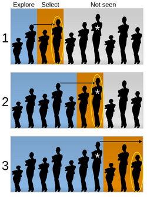
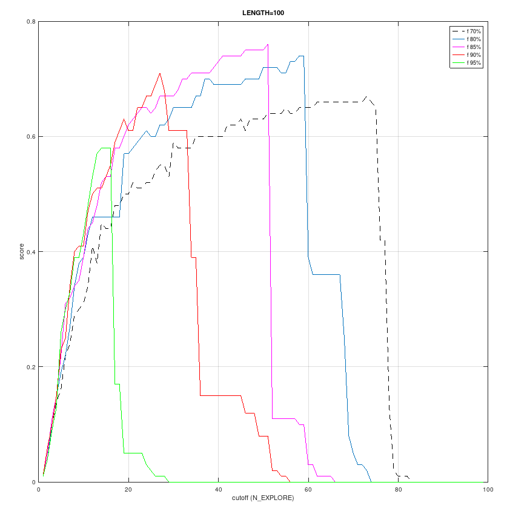
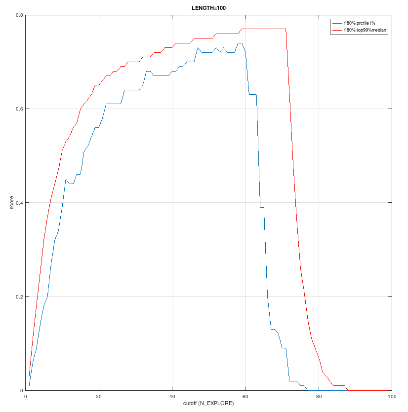

Soft Optimal Stop For 99% Guarantee
By Guillaume Lathoud, August 2025 (glat@glat.info) Github web PDF
The present document and all accompanying files are covered by the
Boost License, as described in ./LICENSE (unless precised otherwise).
The peculiarities of the Parisian real estate market inspired this work.
Starting point: Secretary Problem
The rest of the present article assumes the reader to know the
Secretary Problem. If not, please read it first.

(illustration by cmglee - Own work, CC BY-SA 4.0, original)
Secretary Problem Strategy:
- ("explore") look at the first N_EXPLORE candidates
- pick none of them
- determine threshold_score := best_score_of_N_EXPLORE
- ("select") now look at the rest candidates
- pick the first one with score > threshold_score
- else pick the last one
In the Secretary Problem, the goal is "to have the highest probability of selecting the best applicant of the whole group". The best applicant is marked with a white star in the above figure.
For that goal, it is shown that the cutoff N_EXPLORE is optimal at around 37% of the
total number of candidates.
Issue
Such a goal, and its optimal stop solution (37%), sound nice ; however 37% also means that one has a 37% chance to end up with the fallback solution - i.e. to pick the last candidate.
Indeed, if - like in case 3 in the above figure - one already saw the best possible candidate (white star) before the 37% cutoff, then one mechanically ends up picking the last candidate (marked in yellow), which gives a pretty random result. The output can be pretty bad, so the reliability is not guaranteed, at least not over a single pass.
And in life, there are quite a few single pass situations.
A different goal
Let us look at a slightly different problem: guarantee with 99% chance that we'll pick a "pretty good" candidate (not targetting the best one).
Then we need a strategy to maximize the worst case. To that effect, we
choose to maximize the score of the 1% lowest percentile across the results of
many simulations.
Proposed strategy: very similar to the Secretary Problem strategy, just a bit softer:
- ("explore") look at the first N_EXPLORE candidates (e.g. cutoff 37%, or any
other percentage of the whole number of candidates)
- pick none of them
- determine threshold_score := soft_factor * best_score_of_N_EXPLORE
- example soft_factor: 80%
- ("select") now look at the rest candidates
- pick the first one with score > threshold_score
- else pick the last one
So the differences with the Secretary Problem are:
- in the problem & evaluation: for a given value of the cutoff N_EXPLORE, we repeat a simulation many times and look at the score of the lowest 1% percentile (instead of "percentage that picked the best candidate").
- in the solution: introduced a soft_factor
One possible implementation: uniform use case
We don't know anything about the target market, so let's assume that the scores of the candidates are uniformly distributed, from worse (0.0) to best (1.0).
For a relatively small total number of candidates LENGTH=100 (for many scenarios, of a realistic order of magnitude), and various soft_factor values, here are the corresponding implementations:
Figure: score at the lowest 1% percentile for various soft_factor values and various cutoff (N_EXPLORE) values:
- octave code to produce the figure
- figure (click here to open a bigger version):
{kind=link}

In all cases, increasing too much the cutoff N_EXPLORE leads to failure.
My favorite would be soft_factor=80% and cutoff threshold N_EXPLORE around 40/100, which gives a score of 0.68 at the lowest 1% percentile.
When accepting the 1% risk, that result is a pretty good guarantee, and most likely in practice we'll end up with a better pick, as shown below.
For soft_factor=80% and cutoff threshold around 40/100:
- score at the lowest 1% percentile: around 0.68
- median score of top 99% percentile: around 0.72
Values around 0.72 can be judged as "pretty good" - our objective.
Figure: for soft_factor=80% and various cutoff values, score at the lowest 1% percentile, and median score of the top 99% percentiles:
- Octave code to produce the figure
- figure (click here to open a bigger version):
{kind=link}

General Observation
Changing the order of magnitude of LENGTH can possibly change quite a bit the shape of the results. However, a common behaviour emerges, similar to what the above pictures show: with increasing N_EXPLORE, the score increases, then shows a plateau ; then when further increasing N_EXPLORE, the score abruptly falls down to zero.
In other words, about N_EXPLORE: to get a "pretty good" result and guarantee 99% success, one
should "explore" long enough (the score increases), but not too long
either (abrupt fall to zero).
Conclusion
By not targetting the best candidate, but rather a "pretty good"
candidate, we built a strategy that guarantees 99% success.
Acknowledgments
Thanks to Julien Bourgeois for his comments.